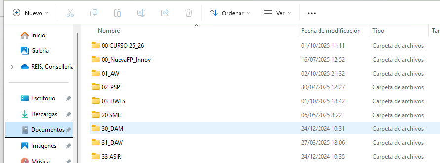

Desde la aparición de los primeros sistemas de archivos, los sistemas operativos han necesitado una herramienta que permitiera a los usuarios trabajar con el sistema de archivos y que mostrara el contenido del disco duro de una manera amigable y fácil de gestionar. Esta herramienta es el gestor de archivos, que se encarga de hacer de intermediario entre los datos del sistema y nosotros.

Con la aparición de las redes de ordenadores se creó un protocolo capaz de transferir archivos basado en una arquitectura cliente-servidor, el FTP (del inglés File Transfer Protocol, Protocolo de transferencia de archivos). A pesar de ello, este mecanismo de transferencia (que todavía se utiliza hoy en día), resulta de cierta complicación para los usuarios que no tienen conocimientos técnicos en informática.
Cuando se produjo la gran expansión comercial de Internet, hacia mediados de los años noventa del siglo XX, la necesidad de disponer de los archivos pasó de ser una necesidad local a una necesidad global, es decir, de poder disponer de nuestros archivos a través de Internet desde cualquier parte del mundo.
Este conjunto de hechos impulsó el nacimiento de aplicaciones web que permitieran tener acceso a los archivos de manera remota y sencilla, los gestores de archivos web.
Las funcionalidades básicas que tiene cualquier gestor de archivos son las siguientes:
Algunos gestores de archivos web, además de las funcionalidades básicas, incorporan funcionalidades avanzadas como:
Una forma de clasificación de las gestores de archivos es en función de si son aplicaciones documentales o no documentales:
Ejemplos de gestores de archivos web documentales son TinyFileManager, NextCloud, Dropbox, OpenKM, Alfresco, Nuxeo, o Knowledge Tree, entre otros.
Por sencillez, vamos a centrarnos en TinyFileManager. Pero para que aquellos que quieran ampliar y ver NextCloud, al final del documento tienes un apartado donde se explica cómo instalarlo y configurarlo.
Gestor de archivos web
Un gestor de archivos web es una aplicación web que permite consultar y manipular un sistema de archivos remoto.
FTP y SFTP
File transfer protocol (FTP) es un protocolo de red con arquitectura cliente-servidor que fue diseñado para intercambiar y manipular archivos a través de una red de ordenadores que utilice el protocolo IP, como Internet.
Inicialmente, el FTP se llamaba a través de una consola o terminal y toda la interfaz era en modo texto, pero más adelante se desarrollaron interfaces de tipo gráfico que lo soportan.
Hoy en día, el FTP sigue siendo un protocolo muy utilizado para la transferencia de archivos, pero su uso ha disminuido en favor de otros protocolos más modernos y seguros, como el Secure File Transfer Protocol (SFTP).
Hoy en día existen diferentes aplicaciones para gestionar los archivos web. Hay que estudiar las diferentes posibilidades que hay en el mercado y utilizar aquel gestor que más se adapte a los requisitos solicitados por los usuarios.
Aunque quizás no seamos conscientes, los gestores de archivos los encontramos simplificados a menudo dentro de otras aplicaciones, como por ejemplo en los casos en que queremos guardar algún documento que hemos editado y la aplicación nos muestra una ventana donde nos pide dónde queremos guardar el archivo.
Este conjunto de características que hemos visto relativas a los gestores de archivos son aplicables también a los gestores de archivos web. Todos los gestores de archivos web permiten hacer de una manera u otra cargas de archivos al servidor (si no, se perdería el sentido de gestión remota), y para hacerlo, en última instancia del proceso, acaban llamando al gestor local (suele haber siempre un botón que dice navegar) para que el usuario pueda explorar el sistema de archivos y seleccionar los que quiere cargar al servidor.
Los gestores de archivos web imitan a los gestores de archivos locales en el sentido que ofrecen funcionalidades muy similares accesibles a través de Internet para poder gestionar remotamente nuestros archivos.
Una de las grandes ventajas de trabajar con una interfaz web es que no es necesario instalar ninguna aplicación del lado del cliente.
TinyFileManager es un gestor de archivos web sencillo y ligero que permite gestionar archivos y directorios a través de una interfaz web. Es ideal para entornos donde se necesita una solución rápida y fácil de usar.
Para instalar TinyFileManager, sigue estos pasos:
Debe estar instalado Xampp o cualquier otro servidor web local en tu ordenador. Si no está instalado puedes utilizar la guia de instalación de Xampp que proporcionada en Aules.
Descargar TinyFileManager: Ve a la página oficial de GitHub de TinyFileManager (https://github.com/prasathmani/tinyfilemanager).
Descarga el archivo tinyfilemanager.php y guárdalo en el directorio xampp/htdocs de tu servidor web local. Por ejemplo, si estás utilizando XAMPP, la ruta sería algo así como C:\xampp\htdocs\gestor\tinyfilemanager.php.
Configurar TinyFileManager: Abre el archivo tinyfilemanager.php en un editor de texto y configura las opciones según tus necesidades. Puedes establecer el nombre de usuario y la contraseña para acceder al gestor, así como otras configuraciones como el directorio raíz, permisos, etc.
Acceder a TinyFileManager: Abre tu navegador web y accede a la URL donde has guardado el archivo tinyfilemanager.php. Por ejemplo, si lo has guardado en C:\xampp\htdocs\gestor\tinyfilemanager.php, la URL sería http://localhost/gestor/tinyfilemanager.php.
Podemos instalar Nextcloud en un servidor web local o remoto. Para instalarlo en local podemos realizarlo con XAMPP o con Docker.
La interfaz de usuario de Nextcloud esta formada por diferentes secciones:
La configuración inicial de Nextcloud incluye los siguientes pasos:
Los diferentes tipos de usuarios en Nextcloud son:
Los distintos permisos de usuario en Nextcloud son:
Las operaciones básicas en la gestión de archivos son las que hemos visto anteriormente: subir archivos, crear carpetas, mover y renombrar archivos, etiquetado, etc.
Es importante definir una estructura de directorios clara y coherente. Esto facilita el acceso y la organización de la información. Por ejemplo, se pueden crear carpetas por proyectos, departamentos o tipos de archivo (documentos, imágenes, videos).
Las opciones de compartición en Nextcloud son:
La configuración de permisos en archivos compartidos incluye:
La auditoría y seguimiento en Nextcloud incluyen:
Los tipos de actividades auditables son:
Se pueden aplicar y verificar medidas de seguridad en un entorno de gestión de archivos web como Nextcloud. Se tratan los temas relacionados con la protección de datos mediante HTTPS, autenticación de dos factores (2FA) y el cifrado de archivos.
Configuración de la Autenticación de Dos Factores (2FA)
Se puede añadir en NextCloud una capa adicional de seguridad al requerir un segundo factor (normalmente un código generado en una aplicación móvil) para acceder a la cuenta.
Para ello de debe iniciar sesión como administrador e ir a Aplicaciones desde el menú superior derecho. Buscar la aplicación Two-Factor TOTP Provider y activarla. Habilitar la opción Autenticación de dos factores para los usuarios.
Una vex activada cada usuario deberá configurar su 2FA individualmente. Una vez activada, cuando el usuario inicie sesión, se le pedirá que escanee un código QR con una aplicación de autenticación (como Google Authenticator) desde un dispositivo móvil.
Cifrado de Archivos en Nextcloud
Se puede proteger los archivos almacenados en el servidor mediante cifrado. Esto asegura que, incluso si los archivos son robados o accedidos de manera indebida, no podrán ser leídos sin la clave de descifrado correcta.
Con el usuario administrador, ir a Aplicaciones y activar la aplicación Default encryption module. Habilitar la opción para cifrar todos los archivos nuevos que se suban al servidor
Una vez activado el módulo, ve a Configuración > Administración > Seguridad. En la sección de Cifrado, habilita la opción para cifrar todos los archivos nuevos que se suban al servidor.
Para comprobar si funciona sube un archivo cualquiera a Nextcloud. Dirígete al servidor y trata de abrir el archivo desde el sistema de archivos directamente (sin pasar por la interfaz de Nextcloud). Verás que el archivo está cifrado y no se puede leer sin el acceso adecuado a Nextcloud.
Intenta descargar el archivo desde la interfaz web de Nextcloud y verifica que el archivo sea legible. De esta manera, se asegura que solo los usuarios autorizados dentro del sistema pueden acceder al contenido real de los archivos.
Aspectos importantes